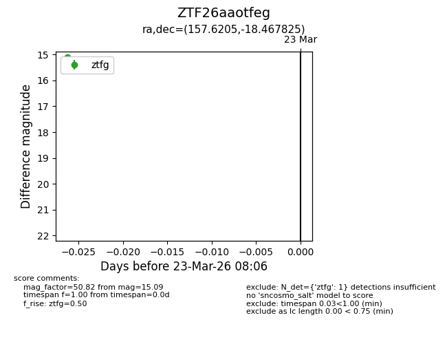
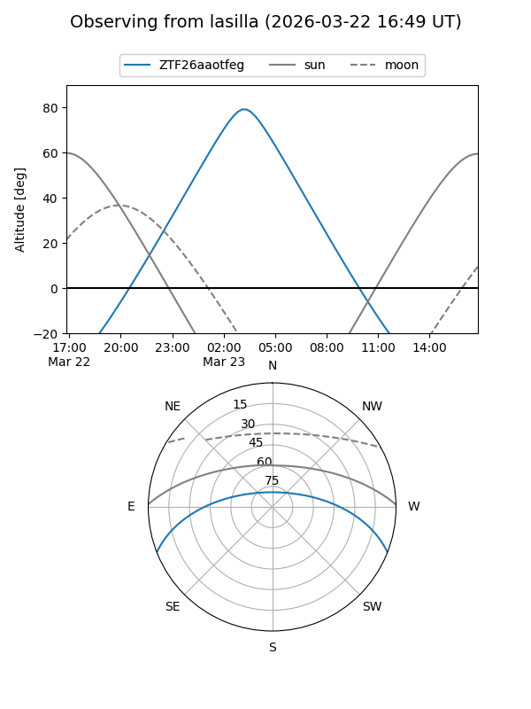
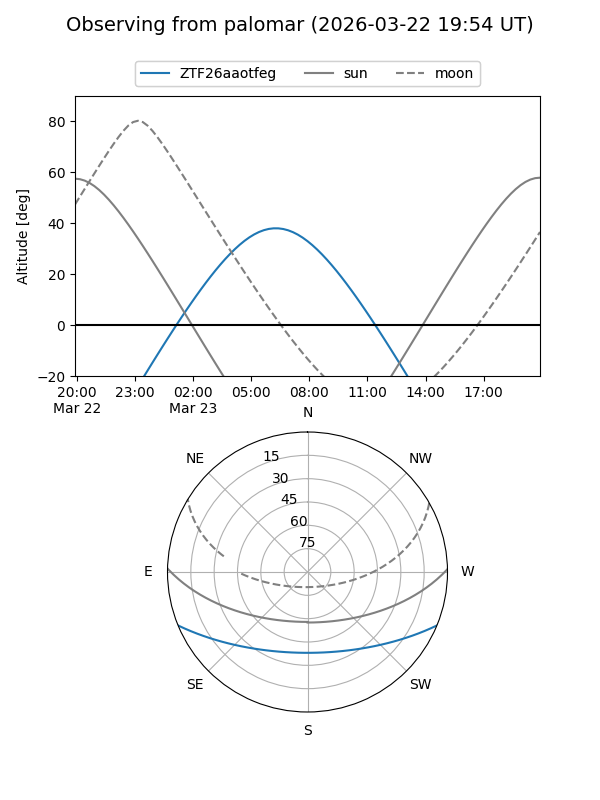

ZTF26aaotfeg
Target ZTF26aaotfeg at 2026-03-23 08:08
Aliases and brokers:
FINK: link
Lasair: link
ALeRCE: link
alt names
ZTF26aaotfeg (ztf,fink_ztf)
Coordinates:
equatorial (ra, dec) = 157.6205,-18.46782
equatorial (HMS+DMS) = 10:30:28.93,-18:28:04.17
galactic (l, b) = (262.1832,+33.02626)
Flags:
Photometry:
last ztfg=15.09
1 ztfg detections
Lightcurve

Visibility


Additional plots